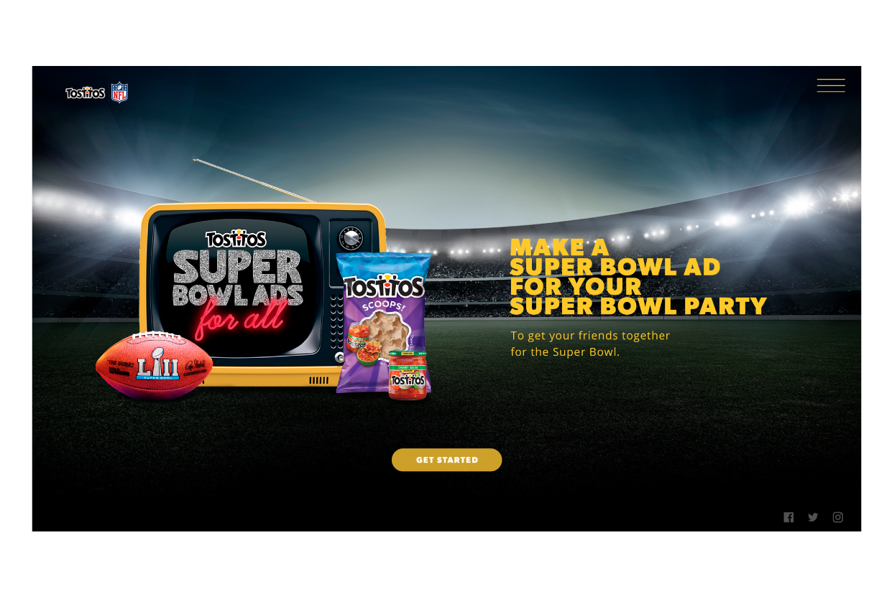
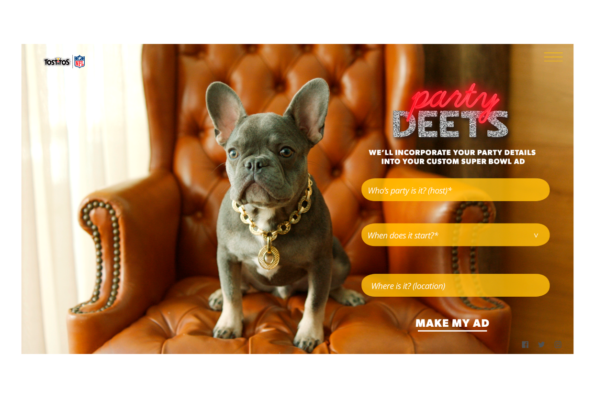
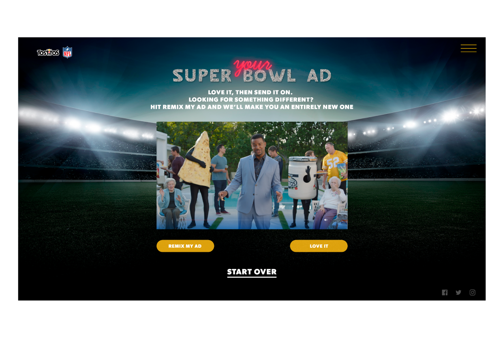
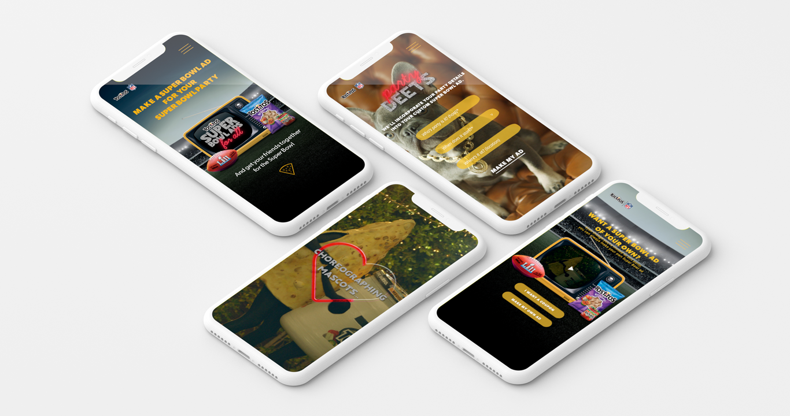

Super Bowl Ad by You
Tostitos wanted to create a simple website that allows users to create a cool invitation for their super bowl parties in the form of a Super Bowl Ad.
Ui • Ux • MOTION GRAPHICS

01. Wireframes
Research showed that the best way to aproach our target audience was to created a website with a

03. Biography
The Biography contains information about all the writer's path in order to give context to the users. In this timeline users have the option to read the short stories and see pictures or videos related to his work.



